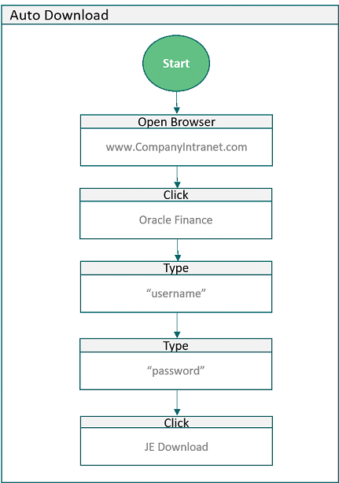

Robotic Process Automation (RPA) - Internal Audit Use and Risks
When you think of Robotic Process Automation (RPA), you may think of a physical robot sitting in your office saying, “beep beep boop.” But it’s more complex than this.
It is software that mimics our own behavior in order to perform a sequence of steps without human intervention.
RPA, or “software robotics,” is a branch of Artificial Intelligence. The difference is that while RPA mimics human behavior or physical actions, AI mimics human intelligence, or, as we at Greenskies define it, human judgement.
NOTE: for more on AI, read our perspective on its impact to the audit profession.
The RPA Use Case
How is this relevant to auditors?
RPA mitigates the risk of human error by performing the boring, repetitive, and mundane.
Multiple studies show that our attention span is dwindling. Though there is much debate on the data and methodology used to draw this conclusion, it seems reasonable to assume as much given how often we’re bombarded with notifications. Additionally, studies show that it takes an average of 25 minutes to return to a task after an interruption, according to Gloria Mark.
To put this into perspective and apply a common RPA use case, if we download the same file each month or week—e.g., the prior months journal entries, P-Card transactions, current employees, terminated users—we follow the process below:
- 1. Click our browser
- 2. Click the application the data is stored in
- 3. Enter our username
- 4. Enter our password
- 5. Click the report we want to download
- 6. Wait
- 7. Check email while waiting
- 8. Reply to emails while waiting
- 9. Get caught up in replying to emails even though the download is complete
- 10. Finally get the file
This is how we end up working all day and feeling drained, but get less done. However, if RPA was implemented for this workflow we could cut out all 10 steps and implement a workflow similar to this:

By telling the RPA solution to open our browser for us, login for us, click the download button for us and deliver the report at 3:00 am, it’s waiting for us when we need it. Note that we used the phrase ‘for us’ throughout.
This is the benefit of RPA: it works for us.
RPA Advantages
One of the advantages of using RPA is that you can take some of the load off your IT group—although we do recommend having IT involved as noted below; they don’t necessarily need to execute on the development. You could have IT develop the functionality that does this for you, but this requires valuable IT resources. However, RPA is becoming more user friendly as it matures.
Although we highly recommend an RPA champion, or RPA center of excellence, depending on the size of the implementation, you don’t need a full-on developer background for implementation.
Additionally, with the mundane and boring tasks automated, you can utilize the work force for higher value tasks. For instance, the audit team can spend more time staying ahead of the risks posed by advances in technology, learn a new skill such as data analytics, allow for more in person conversations, develop stronger relationships, be more in the know on risks to their industry, or deliver on more operational audits that align with the company strategy.
Internal Audit’s Role in Mitigating RPA Risks
With the benefits of automation in mind, we should also consider the risks Internal Audit should identify and mitigate.
Policy changes:Suppose the password policy changes, but with the bot ‘out of sight, out of mind,’ we fail to update the password accordingly.
Application changes:Changes made to processes and applications upstream from where the bot sits could impact downstream bot functionality, so incorporating RPA into the change management process is critical.
Lack of IT involvement: While having a bot champion or a center of excellence that can alleviate the burden of using IT resources, IT still needs to be involved to weigh in on security concerns and should be made aware so consideration to the change management process can be taken.The sooner IT is involved in the discussion, the better.
RPA proliferation and mass scaling: It’s easy to understand if bots are implemented for a single use case, seeing the value-add, and beginning to scale RPA quickly to expect the same ROI enterprise-wide. However, without a strong governance program with executive buy-in, the proliferation will lead to inefficiencies gained from the solution as band-aids are applied without consideration to the enterprise-wide IT environment.
Segregation of Duties: In Gartner’s Predicts 2018: Identity and Access Management, they caution against a lack of segregation of duties leading to fraud, noting, “The major source of fraud will be lack of SOD controls over the human actors who have authority over RPA identities. This will enable them to manipulate two or more SOD-compliant RPA identities that together can provide a toxic combination of entitlements.”
If you use surveys as part of your risk assessment, or to stay up-to-date on changes across business units, then you should update them immediately to include questions around RPA. Very simply, ask if they have implemented any RPA solutions/bots, are considering implementing them, or have no idea what they are.
Take the time to educate them on the risks on the front-end so management will reach out to internal audit if and when they decide to implement RPA.
If your company, or your own internal audit department, is looking at automation solutions and screening vendors, we highly recommend you vet the vendor by asking them:
- What are the risks based on the use cases we’ve laid out?
- How have you seen our use case go wrong post-implementation?
- How have others developed governance around RPA?
- Do you offer governance framework services?
Will RPA Replace Internal Audit?
We don’t think so. There’s too much judgement involved in the audit profession, and RPA is best served in areas where little to no judgement is required. If anything, RPA provides opportunity for additional work of the auditor to mitigate the risks noted above. While that particular audit profession may not take a jobs hit, other areas of the company might.
For example, invoice processing where multiple people are reading emails, downloading invoices from the emails, reading the invoice, entering invoice data, matching purchase orders, and so on may be at some risk. With exception of the approval, most of the process doesn’t require judgement and can be handled by a bot.
However, even with the ideal invoicing example, there’s still doubt in bots taking over. Alex Edlich and Vik Sohoni, senior partners at McKinsey & Company, said in a May 2017 report that, “Several robotics programs have been put on hold, or CIOs have flatly refused to install new bots.”They further note, “platforms on which bots interact often change, and the necessary flexibility isn’t always configured into the bot. Moreover, a new regulation requiring minor changes to an application form could throw off months of work in the back office on a bot that’s nearing completion.”
Ultimately, RPA is another opportunity for audit to identify risk, mitigate risk, and add value.